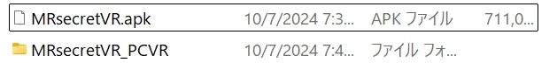

Install Guide
安装指南
感谢购买。请选择游玩环境，按顺序操作。
 PCVR
PCVR
PCVR版
连接电脑与VR头显使用。启动SteamVR，运行“MRsecretVR.exe”即可游玩。
 Quest
Quest
Quest一体机版
仅用Meta Quest系列头显即可运行。在Quest上安装“MRsecretVR.apk”后游玩。
解压后的文件示例

PCVR Setup
PCVR版安装
放置游戏文件
- 解压下载的游戏文件
- 将解压出的MRsecretVR_PCVR文件夹放到路径中不含中文、日文等全角字符的位置
路径含全角字符时，游戏内的操作可能失灵。
连接VR头显并启动SteamVR
请选择你使用的头显。连接完成后，头显中会显示SteamVR主界面。
- 将VR头显连接到电脑
- 启动SteamVR
- 在电脑上安装Meta Horizon Link 应用（原 Meta Quest Link）
- 在Quest的导航栏中打开Quick Settings→Link
- 选择电脑，点击Launch使用Air Link（无线）时，需开启Use Air Link并完成配对
- 在Link主界面选择SteamVR并启动
- 在头显上安装Virtual Desktop应用（需另行购买：Quest在Meta Horizon Store，PICO在PICO商店）
- 在电脑上安装Virtual Desktop Streamer，在ACCOUNTS中输入头显账号（Meta或PICO）的用户名，点击Save
- 在头显上启动Virtual Desktop并连接电脑连接成功后，头显中会显示电脑画面
- 在左侧菜单选择Launch SteamVR
启动游戏
- 打开放好的MRsecretVR_PCVR文件夹
- 双击MRsecretVR.exe
- 游戏启动，VR头显中显示游戏画面
恭喜！
准备工作全部完成！尽情享受与她共度的时光吧！
Quest Setup
Quest一体机版安装
无需电脑和手机，只用Quest即可安装。如果不成功，请使用B. SideQuest。Mobile VR Station目前已无法安装APK。
准备APK文件
- 用Quest的浏览器访问DLSite，登录后下载游戏
- 打开Files应用，对下载的zip文件选择…→Extract（解压）
解压失败时请尝试方法2。未解压的APK无法安装。
- 在电脑上解压下载的游戏文件
- 用USB连接Quest和电脑
- 在Quest中允许访问文件（选择Allow）
- 从电脑将MRsecretVR.apk复制到Quest的Download文件夹
安装APK
- 在Files应用中找到MRsecretVR.apk
- APK的…→Open with（打开方式）→Package Installer
- Install→Done
如果无法安装或启动，请先完成开启开发者模式，然后重试。
启动游戏
- 按 Meta 键打开菜单，选择底部中间的Library
- 选择 Library 左端的三（菜单）
- 选择Unknown Sources（未知来源）
- 选择MRsecretVR并启动
左端的菜单图标很小，有时不好点中。这是Quest系统界面本身的问题。请慢慢移动光标，出现“Menu”提示后再按下。
※打开“Unknown Sources”的步骤因Quest系统版本而略有不同。未开启开发者模式时不会显示“Unknown Sources”。开启后仍未显示时，请重启Quest。
Quest · Library（应用库）
恭喜！
准备工作全部完成！尽情享受与她共度的时光吧！
开启开发者模式
- 在Meta Quest for Developers注册组织见下方“组织注册步骤”
- 打开手机蓝牙，启动Meta Horizon应用（原Meta Quest应用）
- 在三条横线图标的菜单中选择Devices
- 选择你的Quest（确认显示为已连接）
- Headset settings→开启Developer mode
- 重启Quest
组织注册步骤
- 访问Meta Quest for Developers，用Meta Quest账号登录
- 为验证身份，登记信用卡信息（不会扣费）或设置两步验证
- 注册组织名称只是游玩非官方应用的话，名称可随意填写
安装ADB驱动
- 在Meta Quest开发者中心点击Download
- 勾选“I have read and agree to the terms of the license .”，点击Download保存
- 解压zip文件
- 右键点击android_winusb.inf，选择安装
- 显示“操作成功完成。”后点击确定
安装SideQuest
- 在SideQuest官网的“SideQuest desktop app”处点击Download for Windows
- 运行下载的文件进行安装
连接Quest与电脑
- 用USB数据线连接Quest和电脑
- Quest中出现“Allow USB debugging?”时选择Allow勾选“Always allow from this computer”，下次可省去此步
- 点开主菜单下方铃铛图标的Notifications，选择USB detected
- 出现是否允许访问文件的提示时，选择Allow
安装游戏
- 启动SideQuest，确认已识别Quest显示
No device connected表示未连接，请检查与电脑的连接 - 打开顶部的Sideload
- 将MRsecretVR.apk拖入框内（或点击后选择）
- History中显示Completed即完成
启动游戏
- 按 Meta 键打开菜单，选择底部中间的Library
- 选择 Library 左端的三（菜单）
- 选择Unknown Sources（未知来源）
- 选择MRsecretVR并启动
左端的菜单图标很小，有时不好点中。这是Quest系统界面本身的问题。请慢慢移动光标，出现“Menu”提示后再按下。
※打开“Unknown Sources”的步骤因Quest系统版本而略有不同。未开启开发者模式时不会显示“Unknown Sources”。开启后仍未显示时，请重启Quest。
Quest · Library（应用库）
恭喜！
准备工作全部完成！尽情享受与她共度的时光吧！
Update
更新步骤
PC版和Quest版的存档都会保留。
PCVR版
- 解压下载的文件
- 运行新版本的MRsecretVR.exe
游戏开始画面无法选择菜单时
- 试着把游戏文件夹移到其他位置（例：Downloads → Desktop）
- 或将文件夹名改回首次启动时的名称（例：MRsecretVR_ver1.0.1 → MRsecretVR_ver1.0）
Quest一体机版
- 准备新版本的MRsecretVR.apk
- 按常规安装步骤安装会自动覆盖安装
更新完成后，尽情体验新功能和改进吧！